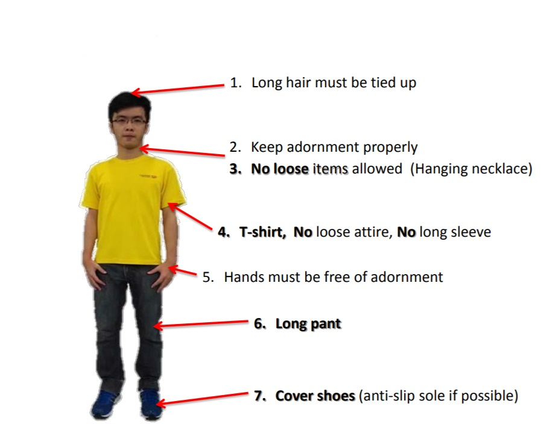
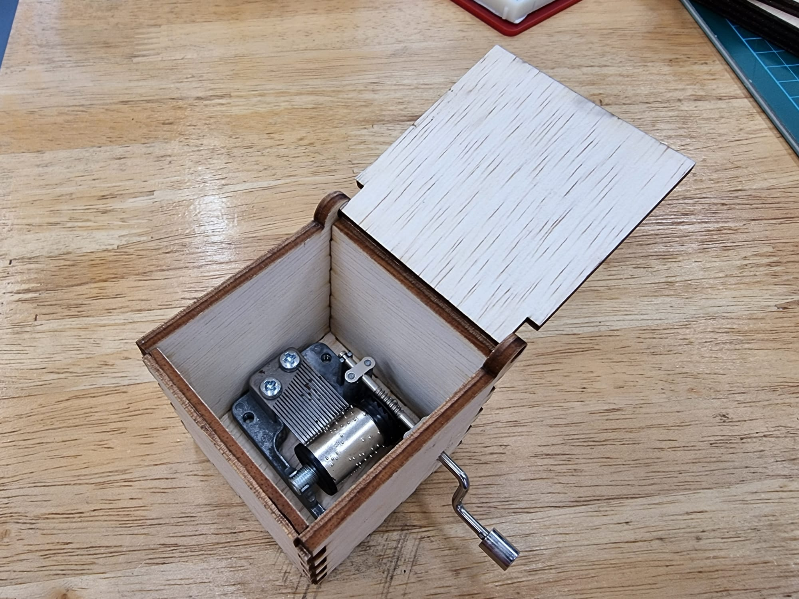
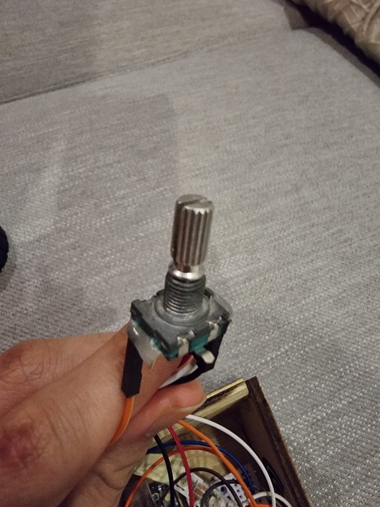
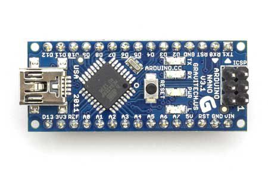

EP1000
What is this Website?
This website is my EP1000 website for documenting. We will be learning
Programming

3D Printing

Laser Cutting
These skills will be integrated into one to form a final project
ABOUT ME
This page is about me!

|
Name: Darryl Teoi |
Interests
I am interested in many things and how they work. My main hobbies are:
-Tinkering with Nerf
-Gaming
-Drumming
I am also interested in pursuing a career in the SAF but i also want to be in the engineering field. I might end up being both as a combat engineer
ASSIGNMENTS
Safety
Safety is number one priority when working in our laboratories and workshop. Document the main points, information that you need to take note of when working in SP Fablab, what are some of the key do’s and don’t’s that you need to take note of, what to do in case of emergencies.

Dresscode is an important part of safety as it minimises the chance of accidents happening or it plays a part of protecting oneself if an accident do happen.


Here are the safety symbols that you might see around the lab to warm us about the type of dangers of this particular area or machine.


In case of emergency, call:
-Ambulance/SCDF at 995
-Police at 999
To summarize, IMPORTANT points are mentioned below:
-You are RESPONSIBLE for the workplace safety on all stakeholders along lines of control at the workplace.
-Report ALL work related injuries(no matter how minor), promptly to technical support staff or supervising staff.
-Contact the school’s general office, 67721206 or call 67721234 when treatment to injury is required.
-Proper attire is a MUST(example, long pants, no slippers, tied hair and more)
Website Development
To start off with the web development, i have chosen Subliume Text 3 as my text editor among others such as Visual Studios and Notepad++ as it is relatively easy for beginners and also free to use.As version control, we had to use Github
This was my first and original About Me Page. At that time i was still unsure of how to add an image.
.png)
I have learnt that the naming of the images are really important for the code to recognise and a small difference in name will cause it to not show the image
CSS
-CSS is needed to create the design of a webpage and defines how a webpage will look like. It organises the information into different sections and gives it colors
Github
-Github allows for version control which means you can simply load back the previous version of saved codes without having to recode it. This allows for easy recovery if mistakes have been made or the code been accidently deleted.
Github also allows you to view what changes have been made to the previous version.
When you have finalised on all the changes, you can commit to main to upload the changes into the local repository.
.png)
Computer Aided Design
CAD allows us to design whatever we want and later through different methods such as 3D printing or laser cutting fabricate it into a physical object.
As for the software, we chose Fusion 360. Fusion 360 is rly similar to other CAD software that i have used in Year 1 and 2 such as Inventor thus it was relatively simple transitioning to it. It is really user friendly and simple to take your design from Fusion to 3D print and laser cut. Here are some exercises that i did. I used a template of the Knight chess piece and traced its outline. As for its circular base, i used the revolve feature.
.png)

Laser Cutting
Laser cutting uses a guided laser that vaporises material as it goes along. It cuts with extreme precision and speed. For us, wood and acrylic sheets are used to fabricate our projects. The image below shows hopw the CAD drawing is orientated to be sent for laser cutting.
.png)
The 3D shape of your design has to be laid out flat in order the be laser cut as the laser cutter only moves in a 2 dimensional plane. The thickness of the walls depends on the thickness of your material, which in my case was a 5mm thick wooden sheet
Imaages can also be engraved using the same laser cutter. The images below shows the fully assembled and engraved music box.

3D Printing and Modelling
3D Printing uses both Fusion 360 and Ultimaker Cura. The 3D printed object is printed layer by layer by the 3D printer which in our Fablab is the Ultimaker 2+. A 3D model is converted into STL file which is the sliced and converted into g-codes. The g-codes are then uploaded into the 3D printer. It is a relatively slow process but fast compared to tradional fabrication methods and its great for prototyping as it is cheap and you can tweak the design and simply print again. There are a few considerations when it comes to 3D printing.The layer height, wall thickness and infill. These factors contribute to the print time, strength, weight and finish of the printed part. The image below shows the 3D printed Knight chess piece.
There was some post processing involved as there were automatically generated supports for the overhang. I used a pair of pliers to break and remove the supports. As was relatively quick as it is a small piece. I then used files to smoothen some uneven edges left behind by the supports.
Electronics
I used Arduino.ide as the programming software to code for the arduino uno as it is a free and easy to navigate software.
.png)
We were also introduced some electronic devices such as switches, motion detector sensor, rotary encoder, LEDs, Neopixels, etc.
We were tasked to try some of these circuits.


Final Project
For my Final Project, I decided to make a giant volume controller. It is connected to the computer through USB. It has the ability to adjust the media volume of the computer simply by rotating the knob clockwise(to increase volume) or anti-clockwise(to decrease volume). It also has RGB lighting which can be seen through the laser-cut holes.
Sketch and Model
I already had a rough idea of how i wanted it to look like since the start.
I wanted it to be sloped towards the user for a more comfortable experience as the angle makes it easier to control the knob
This is the 3D model of the product.
.png)
The RGB lighting shines through the laser-cut holes in the form of a volume symbol.
Electronics
In order for the volume contoller to work, a rotary encoder have to be used.

It converts angular position to analog or digital inputs.
Next is the brains of the project, the Arduino Nano.

Neopixels are used to give it its RGB lighting.
Laser Cutting
The main body of the volume controller will be laser-cut 5mm thick wood.
The pieces came out exactly as i wanted it and it all fits perfectly
3D Printing
The rotating knob of the volume controller will be 3D printed.
The hole in the middle is for the rotary encoder to be inserted into. The rotary encoder was measured to be 6mm in diameter thus i designed the hole to be 6.5mm. The printed knob has a snug fit which was ideal as it meant that it can be easily installed yet tight enough so that the rotary encoder can rotate when the knob is rotated.
Wiring and Coding
For wiring, it was as simple as connecting the rotary encoder and neopixels to the correct terminals on the breadboard and on the arduino.
As for the codes, I took it from Adafruit. For some reason it could not work with the Arduino Nano so i settled with Arduino Uno instead. Luckily, the shell of my volume controller had enough space to fit both the Arduino Uno and the mini breadboard
These are the codes used
#include"TrinketHidCombo.h"
#define"PIN_ENCODER_A 0"
#define"PIN_ENCODER_B 2"
#define"TRINKET_PINx PINB"
static uint8_t enc_prev_pos = 0;
static uint8_t enc_flags = 0;
void setup()
// set pins as input with internal pull-up resistors enabled
pinMode(PIN_ENCODER_A, INPUT);
pinMode(PIN_ENCODER_B, INPUT);
digitalWrite(PIN_ENCODER_A, HIGH);
digitalWrite(PIN_ENCODER_B, HIGH);
TrinketHidCombo.begin(); // start the USB device engine and enumerate
// get an initial reading on the encoder pins
if (digitalRead(PIN_ENCODER_A) == LOW) {
enc_prev_pos |= (1 << 0);
}
if (digitalRead(PIN_ENCODER_B) == LOW) {
enc_prev_pos |= (1 << 1);
}
}
void loop()
{
int8_t enc_action = 0; // 1 or -1 if moved, sign is direction
// note: for better performance, the code will now use
// direct port access techniques
// http://www.arduino.cc/en/Reference/PortManipulation
uint8_t enc_cur_pos = 0;
// read in the encoder state first
if (bit_is_clear(TRINKET_PINx, PIN_ENCODER_A)) {
enc_cur_pos |= (1 << 0);
}
if (bit_is_clear(TRINKET_PINx, PIN_ENCODER_B)) {
enc_cur_pos |= (1 << 1);
}
// if any rotation at all
if (enc_cur_pos != enc_prev_pos)
{
if (enc_prev_pos == 0x00)
{
// this is the first edge
if (enc_cur_pos == 0x01) {
enc_flags |= (1 << 0);
}
else if (enc_cur_pos == 0x02) {
enc_flags |= (1 << 1);
}
}
if (enc_cur_pos == 0x03)
{
// this is when the encoder is in the middle of a "step"
enc_flags |= (1 << 4); }
else if (enc_cur_pos == 0x00)
{
// this is the final edge
if (enc_prev_pos == 0x02) {
enc_flags |= (1 << 2);
}
else if (enc_prev_pos == 0x01) {
enc_flags |= (1 << 3);
}
// check the first and last edge
// or maybe one edge is missing, if missing then require the middle state
// this will reject bounces and false movements
if (bit_is_set(enc_flags, 0) && (bit_is_set(enc_flags, 2) || bit_is_set(enc_flags, 4))) {
enc_action = 1;
}
else if (bit_is_set(enc_flags, 2) && (bit_is_set(enc_flags, 0) || bit_is_set(enc_flags, 4))) {
enc_action = 1;
}
else if (bit_is_set(enc_flags, 1) && (bit_is_set(enc_flags, 3) || bit_is_set(enc_flags, 4))) {
enc_action = -1;
}
else if (bit_is_set(enc_flags, 3) && (bit_is_set(enc_flags, 1) || bit_is_set(enc_flags, 4))) {
enc_action = -1;
}
enc_flags = 0; // reset for next time
}
}
enc_prev_pos = enc_cur_pos;
if (enc_action > 0) {
TrinketHidCombo.pressMultimediaKey(MMKEY_VOL_UP);
}
else if (enc_action < 0) {
TrinketHidCombo.pressMultimediaKey(MMKEY_VOL_DOWN);
}
else {
TrinketHidCombo.poll(); // do nothing, check if USB needs anything done
}
}
#include #ifdef __AVR__
#include
// Which pin on the Arduino is connected to the NeoPixels?
// On a Trinket or Gemma we suggest changing this to 1:
#define LED_PIN 8
// How many NeoPixels are attached to the Arduino?
#define LED_COUNT 8
// NeoPixel brightness, 0 (min) to 255 (max)
#define BRIGHTNESS 255 // Set BRIGHTNESS to about 1/5 (max = 255)
// Declare our NeoPixel strip object:
// Argument 1 = Number of pixels in NeoPixel strip
// Argument 2 = Arduino pin number (most are valid)
// NEO_KHZ800 800 KHz bitstream (most NeoPixel products w/WS2812 LEDs)
// NEO_GRB Pixels are wired for GRB bitstream (most NeoPixel products)
// NEO_RGBW Pixels are wired for RGBW bitstream (NeoPixel RGBW products)
void setup() {
// These lines are specifically to support the Adafruit Trinket 5V 16 MHz.
// Any other board, you can remove this part (but no harm leaving it):
#if defined(__AVR_ATtiny85__) && (F_CPU == 16000000)
clock_prescale_set(clock_div_1);
#endif
// END of Trinket-specific code.
strip.begin(); // INITIALIZE NeoPixel strip object (REQUIRED)
strip.show(); // Turn OFF all pixels ASAP
strip.setBrightness(BRIGHTNESS);
}
void loop() {
// Fill along the length of the strip in various colors...
colorWipe(strip.Color(255, 0, 0) , 50); // Red
colorWipe(strip.Color( 0, 255, 0) , 50); // Green
colorWipe(strip.Color( 0, 0, 255) , 50); // Blue
colorWipe(strip.Color( 0, 0, 0, 255), 50); // True white (not RGB white)
whiteOverRainbow(75, 5);
pulseWhite(5);
rainbowFade2White(3, 3, 1);
// Fill strip pixels one after another with a color. Strip is NOT cleared
// first; anything there will be covered pixel by pixel. Pass in color
// (as a single 'packed' 32-bit value, which you can get by calling
// strip.Color(red, green, blue) as shown in the loop() function above),
// and a delay time (in milliseconds) between pixels.
void colorWipe(uint32_t color, int wait) {
for(int i=0; i strip.show(); // Update strip to match
delay(wait); // Pause for a moment
}
}
void whiteOverRainbow(int whiteSpeed, int whiteLength) {
if(whiteLength >= strip.numPixels()) whiteLength = strip.numPixels() - 1;
int head = whiteLength - 1;
int tail = 0;
int loops = 3;
int loopNum = 0;
uint32_t lastTime = millis();
uint32_t firstPixelHue = 0;
for(;;) { // Repeat forever (or until a 'break' or 'return')
for(int i=0; i ((tail > head) && ((i >= tail) || (i <= head)))) {
strip.setPixelColor(i, strip.Color(0, 0, 0, 255)); // Set white
} else { // else set rainbow
int pixelHue = firstPixelHue + (i * 65536L / strip.numPixels());
strip.setPixelColor(i, strip.gamma32(strip.ColorHSV(pixelHue)));
}
}
strip.show(); // Update strip with new contents
// There's no delay here, it just runs full-tilt until the timer and
// counter combination below runs out.
firstPixelHue += 40; // Advance just a little along the color wheel
if((millis() - lastTime) > whiteSpeed) { // Time to update head/tail?
if(++head >= strip.numPixels()) { // Advance head, wrap around
head = 0;
if(++loopNum >= loops) return;
}
if(++tail >= strip.numPixels()) { // Advance tail, wrap around
tail = 0;
}
lastTime = millis(); // Save time of last movement
}
}
}
void pulseWhite(uint8_t wait) {
for(int j=0; j<256; j++) { // Ramp up from 0 to 255
// Fill entire strip with white at gamma-corrected brightness level 'j':
strip.fill(strip.Color(0, 0, 0, strip.gamma8(j)));
strip.show();
delay(wait);
}
for(int j=255; j>=0; j--) { // Ramp down from 255 to 0
strip.fill(strip.Color(0, 0, 0, strip.gamma8(j)));
strip.show();
delay(wait);
}
void rainbowFade2White(int wait, int rainbowLoops, int whiteLoops) {
int fadeVal=0, fadeMax=100;
// Hue of first pixel runs 'rainbowLoops' complete loops through the color
// wheel. Color wheel has a range of 65536 but it's OK if we roll over, so
// just count from 0 to rainbowLoops*65536, using steps of 256 so we
// advance around the wheel at a decent clip.
for(uint32_t firstPixelHue = 0; firstPixelHue < rainbowLoops*65536;
firstPixelHue += 256) {
for(int i=0; i }